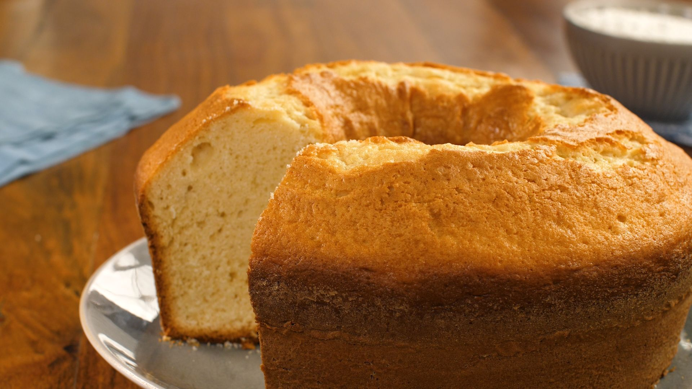

<!DOCTYPE html>
<html lang="en">
<head>
	<meta charset="UTF-8">
	<meta name="viewport" content="width=device-width, initial-scale=1.0">
	<title>Document</title>
</head>
<body>

</body>
</html>

<h1> RECEITA DE BOLO </h1>



<h1> ingredientes</h1>

	<ul><li>2 xícaras (chá) de açúcar</li>
<li>3 xícaras (chá) de farinha de trigo</li>
<li>4 colheres (sopa) de margarina</li>
<li>3 ovos</li>
<li>1 e 1/2 xícara (chá) de leite</li>
<li>1 colher (sopa) bem cheia de fermento em pó</li>


<h1>MODO DE PREPARO</h1>

 	<ul><li>Bata as claras em neve e reserve.</li>

<li>Misture as gemas, a margarina e o açúcar até obter uma massa homogênea.</li>

<li>Acrescente o leite e a farinha de trigo aos poucos, sem parar de bater.</li>

<li>Por último, adicione as claras em neve e o fermento.</li>

<li>Despeje a massa em uma forma grande de furo central untada e enfarinhada.</li>

<li>Asse em forno médio 180 °C, preaquecido, por aproximadamente 40 minutos ou ao furar o bolo com um garfo, este saia limpo.</li>